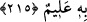

215. Sana (Allah yolunda) ne harcayacaklarını soruyorlar. De ki: Maldan
harcadığınız şey, ebeveyn, yakınlar, yetimler, fakirler ve yolcular için olmalıdır.
Şüphesiz Allah yapacağınız her hayrı bilir.
Nebiyy-i Ekrem (s.a.) Efendimiz, ashâbını Allah yolunda tasaddukta bulunmaya teşvik
edince onlardan oldukça yaşlı birisi olan Amr b. Cemuh (r.a.) ki -ashâbın ileri gelen
zenginlerden biri idi- Efendimiz (s.a.)’e: “Ey Allah’ın Rasûlü! Hangi malımızı nereye
sarfedeceğiz” diye sorunca bu âyet-i kerîme nâzil oldu.
Malın hayır olarak isimlendirilmesinin sebebi, malın hakkının hayır yoluna
sarfedilmek olması dolayısıyla, sanki o, hayrın tâ kendisi olmuş olmasındandır.
Şayet denirse ki; “cevap soruya uygun düşmüyor. Zira onlar neyi infâk edeceklerini
soruyorlardı. Halbuki cevap nerelere infâk edileceğini beyân ediyor.” Buna şöyle cevap
veririz: “Hayır olarak ne harcarsanız” ifâdesi sorunun cevâbını içermektedir. Zira bu
ifâdeden her türlü hayrın infâk edilebileceğini anlamaktayız. Hem kelâm, en mühim olan
şey üzerine kurulmuştur, o da: Malın harcanma yerleridir. Zira infâkın olması, ancak
yerini bulduğu zamandır.
Âyet-i kerîme’de infâk mahalli olarak “isteyenlere ve mükâteb kölelere”
değinilmemesi, ya başka âyetlerde zikredilmesi sebebiyle onlarla iktifa edilmesinden,
ya da, “hayır olarak yaptığınız her şeyi Allah bilir” ifâdesinin içinde mütâlaa
edileceğindendir. Zira bu ifâde, her nereye yapılırsa yapılsın, her hayrı içine alan bir
ifâdedir. Yâni hayır adına ne yaparsanız Allah Teâlâ onun künhünü bilip sevâbını
tastamam verir, demektir.
Bu âyet-i kerîme ile hedeflenen nokta, ana-babaya iyilik etmeye, yakın akrabayı görüp
gözetmeye ve ihtiyaç sahiblerinin ihtiyacını ibâdet zevkiyle görüvermeye teşviktir.
Zekâtın farziyyeti ve sarf yerlerinin sekiz sınıf ile sınırlandırılması bu şekilde hayır
yapmaya münâfî değildir.
Zekâtın sarf yerlerini beyân eden Tevbe sûresinin 60. âyetinin meâli şöyledir:
“Sadakalar (zekâtlar) Allah’dan bir farz olarak ancak fakirlere, düşkünlere, onlar
üzerinde çalışan (zekât toplayan) memûrlara, kalbleri (İslâm’a) ısındırılacak
olanlara, kölelik altında bulunanlara, borçlulara, Allah yoluna ve yolcuya
mahsûstur (toplanan zekât, ancak bu sayılan yerlere verilir.) Allah bilendir, hüküm ve
hikmet sahibidir.”